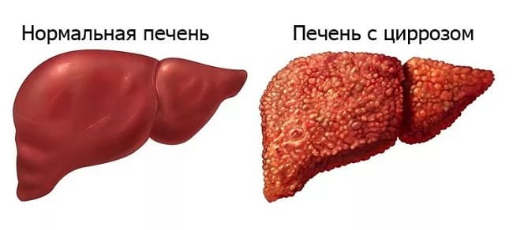
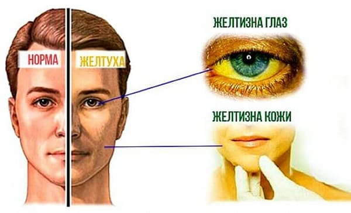

Словосочетание «вирусный гепатит» с медицинского языка на человеческий переводится довольно просто: воспаление печени, вызванное вирусами. В то же время название болезни «вирусный гепатит» подразумевает совершенно определенное заболевание, и такое положение вещей требует некоторого уточнения. Дело в том, что воспаление печени может возникать при очень многих вирусных инфекционных болезнях – при ветряной оспе, при инфекционном мононуклеозе, при герпетической инфекции, при СПИДе, в конце концов. Но во всех перечисленных случаях (а список далеко не полный) поражение печени является лишь одним из многих других проявлений болезни.
Называя же болезнь «вирусный гепатит» и описывая ее различных возбудителей, врачи имеют в виду совершенно конкретную вирусную инфекцию, при которой именно поражение печени является главным и определяющим признаком болезни.
В настоящее время изучено и описано уже несколько вирусов, способных вызывать вирусный гепатит. Различные вирусы и, соответственно, вызываемые ими гепатиты принято обозначать буквами (А, В, С и т. д.). Понятно, что вирус гепатита А будет вызывать болезнь, которая так и называется – вирусный гепатит А. За каждой буковкой кроется совершенно конкретный вирус и совершенно конкретная болезнь, имеющая свои многочисленные особенности – и в распространенности среди населения, и в путях передачи инфекции, и в сроках инкубационного периода, и в тяжести самого заболевания, и в количестве осложнений.
Попадая в организм человека, любой вирус вообще и вирусы гепатита в частности поражают совершенно определенные клетки, именно те, которые он (вирус) может заставить работать на себя. Очевидно, что конкретная клетка не в состоянии выполнять свои основные функции и с этим связаны конкретные симптомы конкретной болезни. При вирусных гепатитах такой клеткой является гепатоцит – основная клетка печени. Чем больше гепатоцитов поразил вирус, тем меньше способности человеческой печени к выполнению своих функций, тем тяжелее и опаснее болезнь.

Все изученные к настоящему времени вирусные гепатиты можно с уверенностью разделить на две основные группы, отличающиеся друг от друга по способу заражения.
Первая группа – типичные кишечные инфекции, имеющие так называемый «фекально-оральный» путь передачи; к ним относятся вирусный гепатит А и вирусный гепатит Е.
Вторая группа – типичные кровяные инфекции; пути передачи – кровь и другие жидкие среды организма (слюна, сперма, грудное молоко). Представители этой группы – вирусный гепатит В, вирусный гепатит С и вирусный гепатит Δ (дельта).
Теперь несколько слов про каждый из перечисленных гепатитов.
Вирусный гепатит А
Одна из самых распространенных кишечных инфекций, уровень заболеваемости которой теснейшим образом связан с санитарно-гигиеническим состоянием конкретной территории, особенно (!!!) с качеством питьевой воды. Восприимчивость к этому вирусу всеобщая, т. е. любой человек имеет реальные шансы заразиться; перенесенная болезнь оставляет очень длительный, практически пожизненный иммунитет, а дети до 14 лет болеют в три раза чаще, чем взрослые. С учетом особенностей заражения (водный путь) понятно, что чем больше потребление воды, тем больше шансов инфицироваться. Неудивительно, что в конце лета и в начале осени имеет место подъем заболеваемости – летом воды надо много, и именно летом легче всего заразиться. Ну а поскольку инкубационный период при гепатите А, как правило, составляет от 4 до 6 недель, то вполне понятно, что минимальная заболеваемость имеет место в начале лета, ну а к осени все, кто выпил не то, что надо было, как раз и заболеют.

Вирусный гепатит Е
Тоже кишечная инфекция, идентичная почти по всем параметрам гепатиту А, но распространенная больше в странах Азии и Африки. Если для того, чтобы заразиться гепатитом А, теоретически достаточно проглотить один-единственный вирус, то при гепатите Е инфицирующая доза (т. е. количество вирусов, необходимых для заражения) должна быть довольно большой. Именно поэтому гепатитом Е редко заражаются бытовым путем (через грязные руки), но часто (естественно, там, где вирус распространен) через системы водоснабжения.
Эпидемиологи считают, что высокая заболеваемость гепатитом А – следствие плохого санитарного состояния систем водоснабжения, а заболеваемость гепатитом Е – свидетельство очень плохого состояния указанных систем. Неудивительны в этой связи эпидемии гепатита Е в азиатских странах, когда количество заболевших исчисляется десятками тысяч человек.
Отрадно заметить, что у нас гепатит Е встречается довольно-таки редко, и это вселяет оптимизм и веру в светлое будущее отечественных систем водоснабжения.
Вирусный гепатит В
Относится к инфекциям, наиболее значимым в социальном и экономическом отношении. По данным ВОЗ, более 1 млрд. людей инфицированы вирусом гепатита В, при этом заболевают ежегодно более 50 млн, а более 2 млн., – умирают! Как мы уже отметили, вирус гепатита В передается через зараженную кровь и (реже) половым путем. Не следует заблуждаться касательно того, что если вы не обращались за медицинской помощью и тщательно выбирали половых партнеров, то болезнь вам не грозит.
Для заражения достаточно мельчайшей капельки крови, и порой источником заражения является общая зубная щетка или страстные поцелуи.
Нередки случаи инфицирования при проведении косметических процедур, прокалывании ушей, нанесении татуировок, использовании общих бритв, хотя на первом месте, и это однозначно, лечебно-диагностические медицинские процедуры – операции, инъекции, переливания крови, стоматологические вмешательства и т. п.
Инкубационный период при гепатите В заметно более длительный, чем при гепатите А, – от 2-х до 6-ти месяцев. В целом, гепатит В отличается наибольшей из всех вирусных гепатитов тяжестью болезни – у 10 % больных после перенесенного острого гепатита развивается хронический гепатит, нередко заканчивающийся циррозом печени. Очень важным моментом в распространении заболевания является тот факт, что от 5 до 10 % людей, перенесших гепатит В, становятся хроническими носителями (и распространителями) вируса.
Если заболевание беременной женщины гепатитом А для плода не опасно, то при гепатите В риск заражения и плода и новорожденного очень высок.

Вирусный гепатит С
Распространяется так же, как гепатит В, но протекает несколько легче. Вовсе не является редкостью – до 15 % всех вирусных гепатитов связаны именно с гепатитом С. Принципиальная и самая печальная особенность этого вируса – у 60–75 % заболевших развивается хронический гепатит.
Вирусный гепатит ∆
Очень (!) страшный вариант вирусного гепатита. Особенностью дельта-вируса является тот факт, что размножаться и вызывать болезнь он способен только в присутствии вируса гепатита В. Таким образом, печень поражают одновременно два вируса, и, упрощенно говоря, дельта-вирус как бы усиливает поражающий эффект вируса гепатита В с самыми неблагоприятными последствиями.
* * *
Отличить по симптомам болезни один вирусный гепатит от другого почти невозможно (для этого проводятся довольно сложные лабораторные исследования). В то же время не очень сложные исследования позволяют с уверенностью ответить на вопрос, есть вирусный гепатит или нет.
Существует три типичных симптома, характерных для любого вирусного гепатита:
1 желтуха (желтушное окрашивание кожи и слизистых оболочек);
2 темная моча;
3 светлый кал;
Другие проявления болезни могут быть весьма разнообразными – повышение температуры, рвота, тошнота, понос, боли в животе, головная боль.
Нередки относительно легкие, безжелтушные формы болезни, когда только анализы могут позволить врачу правильно поставить диагноз.

Ни один врач, даже самый опытный, и даже располагающий результатами самого наилучшего обследования, не может прогнозировать течение болезни – и сроки выздоровления, и тяжесть заболевания, и вероятность осложнений, вплоть до развития цирроза печени, в очень малой степени зависят от усилий медицинских работников и определяются всего лишь тремя факторами:
• активностью вируса;
• способностью организма «постоять за себя»;
• точностью, с которой больной выполняет врачебные назначения.
К огромному сожалению, возможности медицины в лечении вирусных гепатитов очень невелики. Больные с тяжелыми формами заболевания и с выраженной печеночной недостаточностью лечатся в реанимационных отделениях инфекционных стационаров. Лечение это очень сложное, очень дорогое и, как это ни печально, часто не очень эффективное.
Способов борьбы непосредственно с вирусами еще не придумали, поэтому цель лечения – уменьшение нагрузки на печень и коррекция тех расстройств, которые имеют место при печеночной недостаточности (токсикоз, нарушения свертывания крови, расстройства пищеварения и т. д.).
При легких и среднетяжелых формах вирусных гепатитов главные и практически единственные способы лечения – это соблюдение диеты и покой (однако американские врачи не считают доказанным тот факт, что ограничение двигательной активности ускоряет выздоровление).
Суть диеты – легкоусвояемые продукты. Категорическое исключение жиров. Достаточное количество жидкости.
Подробности касательно диеты.
• Продолжительность – не менее 6 мес. О том, когда следует перестать страдать и начать есть по-человечески, можно узнать только у врача, и только после того, как будут взяты специальные анализы.
• Лучше есть часто, но малыми порциями.
• Оптимальна специальная обработка продуктов, улучшающая и облегчающая усвоение и переваривание. Все, что можно, максимально размягчать (перекручивать, рубить, тереть, нарезать, перетирать).
• Не жарить! Варить, парить, печь.
• Все желательно в теплом виде. Горячее нельзя.
• Нельзя:
1 газированные напитки;
2 стимуляторы аппетита: острые приправы, соусы (кетчупы, майонез), копчености, соленья, маринады;
3 грибы, консервы, кофе, какао, шоколад;
4 жевательные резинки;
5 сдобу, мороженое;
• В остром периоде болезни (когда очень плохо) главное – обильное питье (5 % глюкоза, чай с сахаром или медом, компот из сухофруктов, отвар шиповника). Сладкие фрукты – лучше протертые. Арбуз. Как только станет чуть получше – овощные супы, кисель, фруктовые соки, жидкие протертые каши на воде.
• После исчезновения желтухи – нежирные сорта мяса и рыбы, несвежий хлеб (вчерашний), нежирный творог, неострый сыр, супы (снимать жир!), овощные пюре. Печеные яблоки.
Поскольку диета сложна и принципиально влияет на исход болезни, начало лечения именно в условиях стационара представляется более предпочтительным, поскольку меньше вероятность того, что кто-нибудь из любвеобильных родственников «пожалеет» и даст чего-нибудь вкусненького.
Кроме этого преимущество стационара заключается в том, что:
• можно вовремя помочь при нарастании тяжести заболевания, к примеру, ввести внутривенно достаточное количество жидкости, когда из-за рвоты ребенок не может пить;
• легче ограничить двигательную активность.
Конечно же, врачи при вирусных гепатитах лекарства назначают – витамины, препараты, улучшающие обменные процессы в печени, вводят побольше жидкости внутривенно – такое лечение способно удовлетворить подавляющее большинство наших соотечественников. Но наиболее сложным психологическим моментом лечения вирусного гепатита является тот факт, что средний взрослый человек, как правило, склонен переоценивать значимость капельниц и витаминов, недооценивая при этом важность элементарной диеты – и это прослеживается как в отношении себя любимого, так и по отношению к детям.
Вся польза всех вместе взятых наимоднейших лекарств может быть с легкостью нейтрализована кусочком сала, маринованным грибком или тарелкой жареной картошки!
Е.О.Комаровский. "Здоровье ребенка"